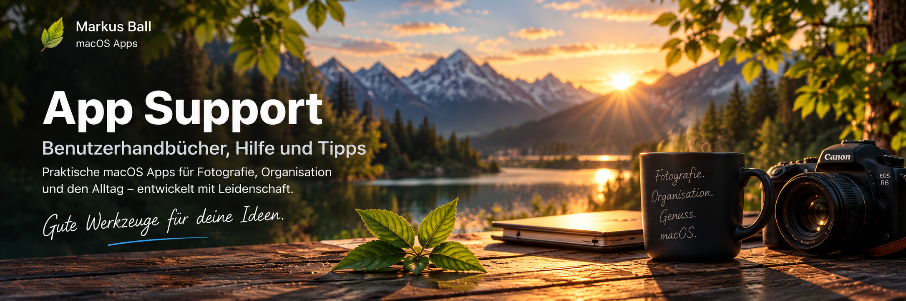
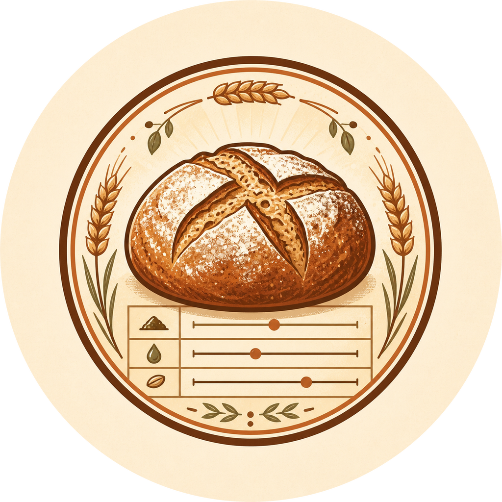

PhotoCaptureTime
Fotos nach Aufnahmezeit
intelligent benennen.
- Automatische Zeitstempel
- Flexible Namensregeln
- Mehr Ordnung in der Fotosammlung

Fotos nach Aufnahmezeit
intelligent benennen.
Fotos sicher importieren
und automatisch organisieren.
Kontrollierte HDR-Gain-Maps
für Fotos.

Brot-Rezepte berechnen
und den Backtag planen.